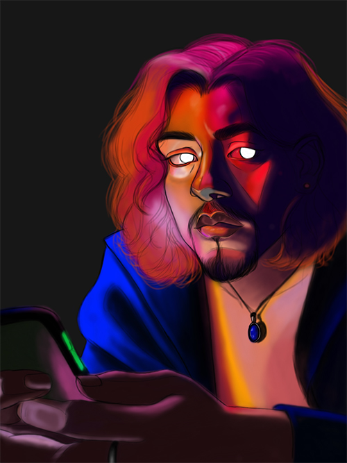

Home ✨ Raster ✨ Vector ✨ Time Based Media ✨ Print Layout ✨ About the Artist ✨
Contact info:
felixorozco24@gmail.com
IG and Twitter: @fee.lines
Gay, Latino Artist from San Francisco. I work in a variety of mediums but prefer oil paint and digital. I would like to one day be a full illustrator but I can’t chose a medium so I like learning a bit of everything. Check my Instagram for updates on my art and If you have any questions, feel free to reach out.